Luku 1 R ohjelmointikielestä
R on ohjelmointikieli, joka on tarkoitettu erityisesti tilastolliseen analyysiin. R on yksi yleisempiä datatieteen työkaluja niin yliopistoissa kuin yritysmaailmassa. Aloittelijoille R voi kuitenkin vaikuttaa aluksi varsin eksoottiselta vaihtoehdolta. Esimerkiksi Excelin taulukkolaskentaan perustuva käyttöliittymä on aivan eri maailmasta kuin ohjelmointiin perustuva R. R:n tekstipohjaisia ohjelmia on kuitenkin paljon helpompi hallinnoida verrattuna Exceliin, kun data-analyysi vaatii useita ja monimutkaisia askeleita.
Toisaalta puhtaat koodarit voivat ihmetellä, miksi emme käytä Python ohjelmointikieltä. Kun taas matemaatikot ovat ehkä omimmillaan Matlabin tai Julian kanssa. Se voidaan myöntää, että on olemassa muitakin erinomaisia työkaluja tilastollista analyysiä varten. R on kuitenkin verrattain helppo aloittaa verrattuna muihin kieliin, kun kyse on puhtaasta data-analyysistä. Tämän vuoksi tämän kurssin kaikki tietokonetehtävät suoritetaan R ohjelmointikielellä. Jos haluat lukea lisää R kielen filosofiasta ja historiasta, voit vilkaista jossain vaiheessa kurssia lukua 2 kirjasta R programming for data science (Peng 2016).
Tämän luvun päämotivaatio onkin esitellä R:n ominaisuuksia ja toivottavasti vakuuttaa lukija siitä, että R voi olla hyödyllinen työkalu. Tarkoitus ei kuitenkaan ole antaa kaikenkattavaa esittelyä R:ään vaan R taidot kehittyvät varmasti kurssin aikana.
Ensin käymme läpi R ohjelmointikielen ja RStudion asennuksen, sekä RStudion käyttöliittymän perusteet luvussa 1.1. Lisämateriaalia R ohjelmointikielen opetteluun löytyy luvusta 1.2. Lisäksi R:ssä on tyypillistä käyttää muiden ohjelmoijien ja tilastotieteilijöiden käyttämiä paketteja. Lyhyt esittely paketteihin annetaan luvussa 1.3. Tämän jälkeen R:n toimintoja esitellään lyhyen data-analyysin kautta luvussa 1.4. Viimeiseksi luvussa 1.5 sanomme pari sanaa R Markdownista, jonka avulla voi tehdä esimerkiksi raportteja yhdistäen tekstiä ja R koodia. R Markdownin käyttö kurssilla ei kuitenkaan ole pakollista.
1.1 Ohjelmointikieli ja -ympäristö: asennus ja käyttö
R
R on ilmainen ohjelmisto eli kuka tahansa voi ladata R ohjelmointikielen tietokoneelleen missä vain milloin tahansa CRAN:in sivuilta. Kuten kuvasta 1.1 näkyy, täytyy vain valita oikea asennustapa käyttöjärjestelmän mukaan (Windows, macOS tai Linux). Ohjevideo R ohjelmointikielen asennukseen Windows käyttöjärjestelmälle löytyy MyCourses sivujen osiosta R-ohjelmointikielen ja RStudion asennus sekä käyttö (katso video R:n ja RStudion asennus).
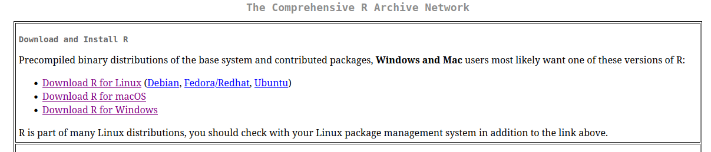
Kuva 1.1: R ohjelmointikielen voi asentaa erinäisille käyttöjärjestelmille CRAN:in sivuilta.
Kun R on asennettu, niin komentoja voidaan ajaa komentoriviltä1. Kuvassa 1.2 näkyy esimerkki, jossa kaksi R komentoa ajetaan peräkkäin. Ensin R-konsoli käynnistetään komentoriviltä käyttäen komentoa R. Seurauksena näytölle tulostuu perustietoja asennetusta versiosta, lisenssistä jne. Tämän jälkeen
ensimmäinen R komento tallentaa arvon 2 muuttujaan
xkäyttäen nuoli<-notaatiota,toinen komento laskee summan
x + 1jasumman tulos, joka on 3, tulostuu näytölle.
Eli R-konsoli on käyttöliittymä, jonka kautta voidaan suorittaa yksittäisiä R komentoja peräkkäin.
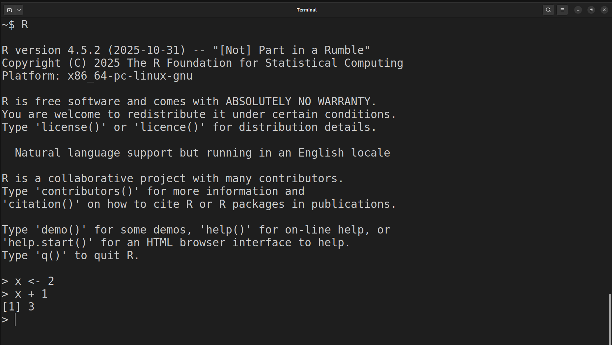
Kuva 1.2: Yksittäisiä R komentoja GNOME komentorivillä.
R:n käyttö komentoriviltä suoraan voi olla kätevää, jos halutaan kokeilla jotain nopeasti. Usein tilastollinen analyysi vaatii kuitenkin useita komentoja ja muuttujia, joiden välillä voi olla monimutkaisia riippuvuussuhteita. Tämän vuoksi on hyödyllistä tallentaa tuotettu koodi (peräkkäiset R komennot) omaan tiedostoon. Näitä tekstitiedostoja kutsutaan R ohjelmiksi (R script). Vaikka R ohjelmat ovatkin pohjimmiltaan tekstitiedostoja, niin nämä tiedostot on tapana nimetä käyttäen päätettä .R päätteen .txt sijaan.
Eli edelliset komennot voidaan tallentaa vaikkapa (teksti)tiedostoon hello_world.R, joka näkyy kuvassa 1.3.
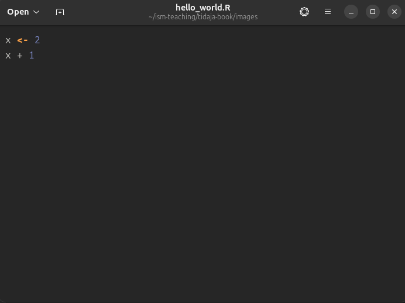
Kuva 1.3: Aiemmat komennot tallennettuna yhteen tiedostoon.
Tämän jälkeen tiedoston hello_world.R komennot voidaan suorittaa komennolla Rscript hello_world.R kuvan 1.4 mukaisesti, jolloin lopputulos tulostuu komentoriville.
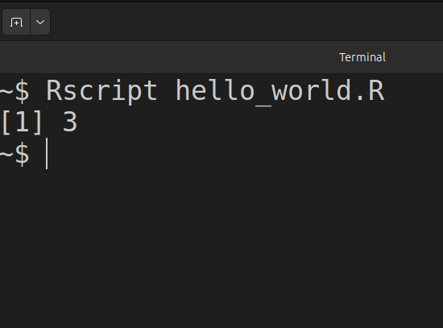
Kuva 1.4: R ohjelman suoritus komentoriviltä.
Monet ohjelmoijat käyttävät pelkästään komentoriviä ja tekstieditoria R ohjelmoimiseen. Yllä myös näytimme, että koodia voidaan ajaa ilman mitään muita lisätyökaluja kunhan R on asennettu. Usein on kuitenkin toivottavaa käyttää ohjelmointiympäristöä (integrated development environment, IDE), joka tarjoaa työkaluja esimerkiksi koodin muokkausta, suorittamista ja virheenjäljitystä (debugging) varten. IDE:n valintaan on useita vaihtoehtoja (Visual Studio Code, Eclipse, …). Omalla vastuulla voit käyttää omavalintaista ohjelmointiympäristöä tai tekstieditoria. Tällä kurssilla käytämme kuitenkin RStudiota, joka on R ohjelmointikielelle räätälöity IDE.
RStudio
RStudion voi asentaa ilmaiseksi Posit yrityksen sivuilta. Kuten kuva 1.5 näyttää, myös RStudion tapauksessa täytyy valita asennus oman käyttöjärjestelmän mukaan. Lisäksi video R:n ja RStudion asennus näyttää RStudion asentamisen Windowsille. Tämä on siis sama video, jossa käydään läpi R ohjelmointikielen asennus.
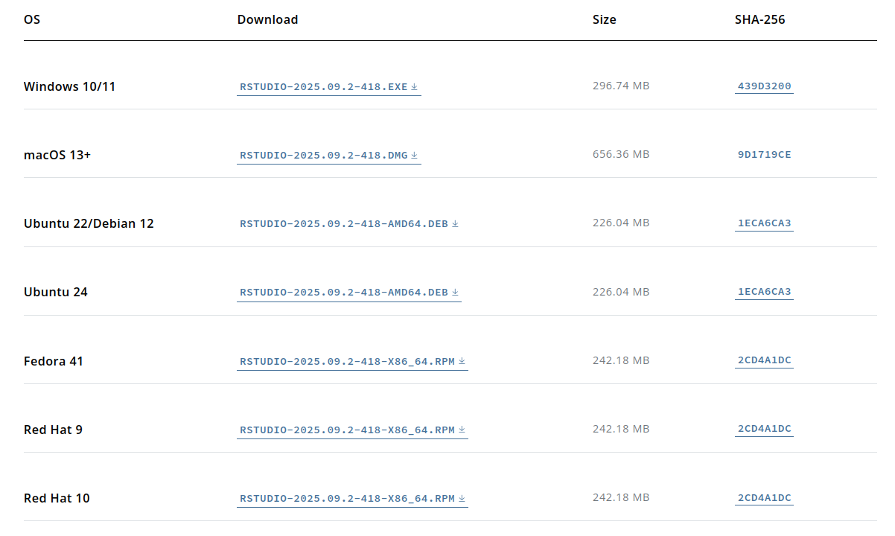
Kuva 1.5: RStudion voi asentaa erinäisille käyttöjärjestelmille Positin sivuilta.
Kun RStudion avaa ensimmäistä kertaa, niin näytöllä näkyy R-konsoli (vertaa kuvaan 1.2). Video R-konsoli avaa R-konsolin toimintoja tarkemmin. Kuten todettua, yleensä komennot kuitenkin halutaan tallentaa yksittäiseen R ohjelmaan. Uuden ohjelman voi avata näppäinyhdistelmällä Ctrl + Shift + N tai RStudion käyttöliittymää käyttäen navigoimalla File → New File → R Script. Uuteen ohjelmaan voi kirjoittaa esimerkiksi kuvan 1.3 komennot. Tämän jälkeen ohjelman voi tallentaa uudella nimellä näppäinyhdistelmällä Ctrl + S tai käyttäen RStudion käyttöliittymää File → Save.
Kun ohjelma on tallennettu esimerkiksi nimellä hello_world.R, niin ohjelma täytyy suorittaa. RStudion kautta ohjelman komentoja suoritetaan kahdella eri tavalla:
Yksittäinen komento suoritetaan asettamalla kursori vastaavalle riville ja painamalla
Ctrl + EnterKoko ohjelma suoritetaan näppäinyhdistelmällä
Ctrl + Shift + Enter
Esimerkiksi tallennetun ohjelman komennot voidaan ajaa peräkkäin asettamalla kursori ensimmäiselle riville ja painamalla Ctrl + Enter kaksi kertaa. Tällöin lopputulos näyttää kuvan 1.6 kaltaiselta. Eli ohjelman koodi näkyy vasemmalla ylhäällä, suoritetut komennot näkyvät konsolissa vasemmalla alhaalla ja tallennetut muuttujat näkyvät oikealla ylhäällä. Oikealla alhaalla olevassa ikkunassa ei tässä tapauksessa näy mitään mutta esimerkiksi mahdolliset kuvaajat ilmestyvät kyseiseen ikkunaan.
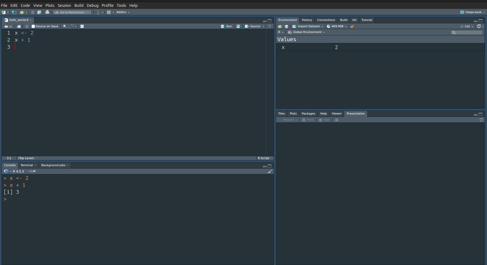
Kuva 1.6: RStudion käyttöliittymän näkymä yksinkertaisen ohjelman suorituksen jälkeen.
Tarkemmin RStudion toimintoihin voi perehtyä katsomalla videot RStudion koodieditori, RStudion muut toimintoikkunat ja RStudion hallintavalikoita.
1.2 Ohjelmoinnin opettelu
Ohjelmointia oppii kaikista parhaiten tekemällä. Lisäksi ohjelmoinnin opetteluun on olemassa valtava määrä erinomaisia lähteitä, jotka ovat yleensä vielä avoimesti saatavilla. Tämän vuoksi näissä muistiinpanoissa ei ole tarkoitus antaa kaikenkattavaa esittelyä R ohjelmointikieleen. Alla listaamme kuitenkin muutamia avoimesti saatavia lähteitä, jotka saattavat olla hyödyllisiä kurssin kannalta:
R tutuksi on kurssisivuilta saatavissa oleva suomenkielinen luentomoniste R:n opetteluun. Materiaali keskittyy perus-R (base R) toimintoihin menemättä syvemmälle R-paketteihin (R package) (katso luku 1.3).
R Programming for Data Science on englanninkielinen lähde, joka on samanhenkinen edellä mainitun luentomonisteen kanssa (Peng 2016).
R for Data Science tarjoaa vaihtoehtoisen näkökulman kahteen yllä olevaan lähteeseen. Perus-R:n sijaan kyseinen kirja keskittyy pakettikokoelman Tidyverse toimintoihin. Tidyverse antaa vaihtoehtoisia datatieteen työkaluja (Wickham, Çetinkaya-Rundel, and Grolemund 2017).
Advanced R voi olla hyödyllinen kokeneille ohjelmoijille, jotka haluavat perehtyä tarkemmin esimerkiksi oliohjelmointiin, funktionaaliseen ohjelmointiin ja R:n tietorakenteisiin (Wickham 2019).
Yllä olevia lähteitä ei välttämättä kannata lukea kannesta kanteen vaan niitä kannattaa kohdella käsikirjoina. Eli kun ongelma tulee vastaan, niin kannattaa tarkistaa, jos vastaus löytyisi yllä olevasta kirjallisuudesta. Lisäksi usein joku muukin on kokenut saman ongelman. Tälllöin suurella todennäköisyydellä vastaus voi löytyä internetin keskustelupalstoilta kuten Stack Overflowsta.
Lisäksi R:n dokumentaatio auttaa, kun tiedät R funktion/komennon nimen mutta et muista miten sitä käytetään. Esimerkiksi
antaa funktion matrix() dokumentaation, jonka alku näkyy kuvassa 1.7.
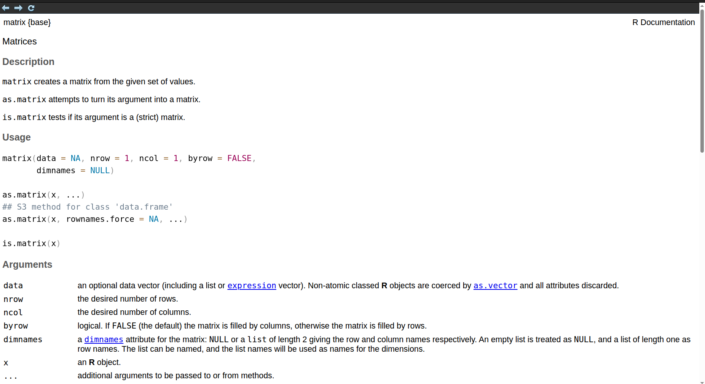
Kuva 1.7: Funktion matrix() dokumentaatio.
1.3 R-paketit
Asennettaessa R ohjelmointikieli luvun 1.1 ohjeiden mukaan, tietokoneelle asentuu perus-R (base-R) ja muutama suositeltu R-paketti. Perus-R on ikään kuin pienin toimiva tuote (minimum viable product), joka sisältää vain vaaditut toiminnot R:n ajamiseen. Toisaalta R-paketit (R packages) tarjoavat laajennuksia perustoimintoihin.
R on vapaa ja avoimen lähdekoodin ohjelmisto. Tämä mahdollistaa sen, että kuka tahansa voi kehittää uusia ominaisuuksia R-pakettien muodossa. Paketit julkaistaan yleensä CRAN:in sivuilla vaikka muitakin julkaisufoorumeita kuten Bioconductor on olemassa. Alla on muutamia esimerkkejä R-paketeista:
ggplot2 mahdollistaa laadukkaiden kuvaajien tekemisen, vaikka tietenkin perus-R toiminnallisuuksien avulla voi myös tehdä kuvaajia.
dplyr antaa työkaluja datan “siivoamiseen” ennen varsinaista analyysiä.
tibble tarjoaa vaihtoehtoisen toteutuksen perus-R:n tietorakenteelle
data.frame, joka on tarkoitettu datan tallentamiseen.glmnet paketin avulla voi sovittaa säännellyn lineaarisen regressiomallin (regularized linear regression), joka on eräs laajennus perinteisestä lineaarisesta regressiosta.
Kolme ensimmäistä mainituista paketeista kuuluvat Tidyverse pakettikokoelmaan, joka antaa vaihtoehtoisia datatieteen työkaluja verrattuna perus-R toimintoihin2. Toisaalta monet R-paketit kuten glmnet tarjoavat toteutuksia tilastollisista menetelmistä, joita ei ole sisällytetty perus-R:ään.
Jotta tietyn R-paketin toimintoja voidaan käyttää, niin kyseinen paketti täytyy ensin asentaa. Käytämme esimerkkinä dplyr pakettia, joka asennetaan R-komennolla
Huomaa, että yllä paketin nimi täytyy antaa " merkkien sisällä. Paketin asennus tarvitsee tehdä vain kerran. Eli esimerkiksi jos asennat paketin, suljet RStudion ja avaat RStudion uudestaan, niin pakettia ei tarvitse asentaa uudestaan.
Kun paketti on asennettu niin voit käyttää sen funktioita. Jos kuitenkin yrität esim. käyttää paketin dplyr3 funktiota lead suoraan, niin saat virheilmoituksen
## Error in `lead()`:
## ! could not find function "lead"Yleinen tapa saada paketin sisäiset funktiot käyttöön on kiinnittää (attach) se ohjelman alkuun käyttäen library() komentoa, jonka jälkeen pakettia voidaan käyttää
## [1] 2 3 NAHuomaa, että komennossa library() paketin nimeä ei tarvitse sisällyttää merkkien " sisään.
Paketin tekijät voivat nimetä funktioiden nimet miten haluavat. Tällöin on siis mahdollista, että eri paketeissa on samannimisiä funktioita, jotka toimivat eri tavoin. Jos tälläinen tilanne tulee eteen, niin täytyy tarkentaa kumman paketin funktiota käytetään. Esimerkiksi funktio lag on paketeissa dplyr ja stats (sisältyy perus-R asennukseen). Nämä kaksi erilaista lag funktiota erotetaan asettamalla :: paketin ja funktion väliin.
## [1] 1 2 3
## attr(,"tsp")
## [1] 0 2 1## [1] NA 1 21.4 Data-analyysin askeleet
Seuraavaksi, yksinkertaisen demon avulla, käymme läpi tyypillisen data-analyysin vaiheet:
Datan lukeminen
Datan siivoaminen
Tilastollinen analyysi (visualisointi, mallien sovitus, tulkinta)
Suoritamme data-analyysin ensin perus-R:n ja sitten Tidyversen avulla. Tämä havainnollistaa myös sitä, että R:ssä saman asian voi tehdä useammalla eri tavalla.
Esimerkkinä käytämme kuuluisaa iris havaintoaineistoa, joka sisältää mittauksia kukan terälehden ominaisuuksista kolmelle eri kurjenmiekkalajille setosa, versicolor ja virginica. Data-aineisto on saatavilla perus-R asennuksen mukana mutta oppimisen vuoksi luemme datan tiedostosta. Kyseinen tiedosto on näkyvissä kurssisivuilla. Datan siivoamisen jälkeen sovitamme yksinkertaisen lineaarisen regressiomallin, joka on tuttu menetelmä kurssilta tilastotieteen perusteet.
Ennen kuin jatkamme itse demoon, sanomme pari sanaa työhakemistosta.
Huomautus. Demon R syntaksia ei tarvitse ymmärtää täydellisesti kurssin alussa. Demon tarkoitus on näyttää R:n toiminnallisuuksia ja siihen voi palata myöhemmin kun R taidot ovat kehittyneet.
Työhakemisto
Jotta aineisto voidaan lukea (1. askel), R:n täytyy tietää missä aineisto sijaitsee. Polku aineiston sijainnille kirjoitetaan yleensä työhakemiston (working directory) suhteen. Työhakemisto on se hakemisto/kansio, johon ohjelmien tuottama data tallentuu oletuksena. Nykyisen työhakemiston näet komennolla getwd() ja voit asettaa työhakemiston komennolla setwd(). Kurssia varten voit esimerkiksi tehdä työpöydälle kansion tidaja, jonka sisällä on edelleen kansiot viikottain: 1week, 2week, … Tällöin saatat haluta asettaa työhakemistoksi kansion 1week. Käyttöjärjestelmästä riippuen polku haluttuun kansioon kirjoitetaan hieman eri tavoin. Esimerkiksi Linux Ubuntun tapauksessa voisin asettaa halutun työhakemiston jotakuinkin näin:
Windowsin tapauksessa polku oikeaan kansioon voisi näyttää seuraavalta riippuen käyttäjänimestäsi
Eli setwd() komentoon polku kirjoitetaan merkkien " sisään.
Työhakemiston voi asettaa myös käyttäen RStudion käyttöliittymää. Näppäinyhdistelmällä Ctrl + Shift + H saa auki Choose Working Directory ikkunan jonka kautta voi navigoida haluttuun kansioon. Saman voi tehdä RStudion valikkojen kautta Session → Set Working Directory → Choose Directory. Komennolla getwd() voit tarkistaa, että työhakemisto on varmasti asetettu oikein:
Perus-R toteutus
Ensimmäinen askel on datan lukeminen. Suhteellisen pienet aineistot säilytetään yleensä tekstitiedostoissa4. Tässä tapauksessa aineisto on tallennettu tekstitiedostoon iris.csv, jonka arvot ollaan erotettu pilkuilla (eng: comma-separated values, CSV). Tiedoston iris.csv tarkemman rakenteen voit nähdä avaamalla sen valitsemassasi tekstieditorissa. Kuvassa 1.8 näkyy, että tiedoston ensimmäinen rivi koostuu sarakkeiden otsikoista ja seuraavat rivit ovat yksittäisiä havaintoja. Sarakkeet taas vastaavat muuttujia, esimerkiksi viimeinen sarake antaa jokaisen havainnon kurjenmiekkalajin nimen.
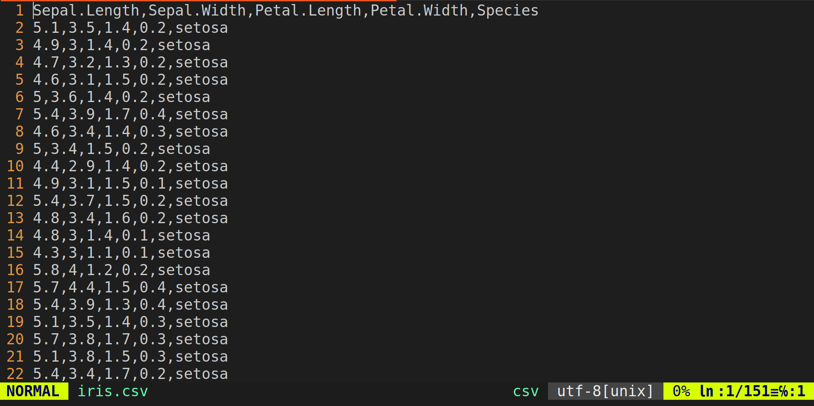
Kuva 1.8: Tiedosto iris.csv avattuna vim tekstieditorissa.
Kun työhakemisto on asetettu (katso edellinen luku), niin komennon read.table() avulla voit lukea datan. Komento ottaa sisäänsä useita argumentteja5 kuten file (polku datatiedostoon), header (sisältääkö ensimmäinen rivi sarakkeiden otsikot?), sep (erotin arvojen välillä), … Jos tiedosto iris.csv on tallennettu työhakemiston sisällä olevaan kansioon data, niin havaintoaineisto voidaan lukea seuraavasti
Havaintoaineiston lukemisen jälkeen kannattaa tarkistaa, että se on luettu oikein. Esimerkiksi jos erotin arvojen välillä on asetettu väärin, niin muuttujaan iris tallennettu havaintoaineisto tulee näyttämään oudolta. Tarkistamiseen on monta eri tapaa. Esimerkiksi kirjoittamalla muuttujan iris R-konsolille koko datajoukko tulostuu (lukuunottamatta viimeisiä rivejä, jos tiedosto on liian suuri). Toinen tapa nähdä havintoaineisto on head komento, joka tulostaa havaintoaineiston ensimmäiset rivit.
## Sepal.Length Sepal.Width Petal.Length Petal.Width Species
## 1 5.1 3.5 1.4 0.2 setosa
## 2 4.9 3.0 1.4 0.2 setosa
## 3 4.7 3.2 1.3 0.2 setosa
## 4 4.6 3.1 1.5 0.2 setosa
## 5 5.0 3.6 1.4 0.2 setosa
## 6 5.4 3.9 1.7 0.4 setosaYllä olevan tulosteen perusteella näyttää siltä, että luimme tiedoston iris.csv oikein. Vielä enemmän informaatiota antaa komento str(),
## 'data.frame': 150 obs. of 5 variables:
## $ Sepal.Length: num 5.1 4.9 4.7 4.6 5 5.4 4.6 5 4.4 4.9 ...
## $ Sepal.Width : num 3.5 3 3.2 3.1 3.6 3.9 3.4 3.4 2.9 3.1 ...
## $ Petal.Length: num 1.4 1.4 1.3 1.5 1.4 1.7 1.4 1.5 1.4 1.5 ...
## $ Petal.Width : num 0.2 0.2 0.2 0.2 0.2 0.4 0.3 0.2 0.2 0.1 ...
## $ Species : chr "setosa" "setosa" "setosa" "setosa" ...Myös str() tulostaa ensimmäiset havainnot sarakkeittain. Lisäksi komento antaa kolumnien tietotyypit. Tässä tapauksessa ensimmäiset neljä kolumnia ovat tyyppiä numerical, joka on varattu kokonais- ja desimaaliluvuille. Viimeinen kolumni on tietotyyppiä character, joka on tarkoitettu tekstimuotoisille muuttujille. Halutessasi luetun havaintoaineiston näet myös erillisessä ikkunassa käyttäen komentoa View() eli View(iris).
Kun havaintoaineisto on luettu, niin yleensä ennen itse tilastollista analyysiä dataa täytyy siivota. Tämä voi tarkoittaa muuttujien (eli sarakkeiden) uudelleennimeämistä tai valintaa, havaintojen suodattamista jne. Tässä tapauksessa haluamme sovittaa lineaarisen regressiomallin, jossa lajin setosa muuttujaa Sepal.Length selitetään muuttujan Sepal.Width muuttujan avulla. Lisäksi monessa ohjelmointikielessä on tapana nimetä muuttujat pienellä (esim. katso Tidyverse tyyliopas). Tämän vuoksi nimeämme valitut sarakkeet myös pienellä.
Aloitamme valitsemalla halutut rivit ja sarakkeet.
Ensimmäinen indeksi6 ennen pilkkua vastaa rivejä ja toinen kolumneja. Ennen pilkkua oleva vertailulauseke kertoo, että valitsemme vain ne rivit jotka vastaavat lajia setosa. Sarakkeista valitsemme vain ensimmäisen (Sepal.Length) ja toisen (Sepal.Width). Komento c tulee sanasta concatenate. Kyseisellä komennolla voi yhdistää arvoja vektoreiksi. Seuraavaksi nimeämme kolumnit pienellä ja pisteen . korvaamme alaviivalla _:
Sarakkeiden nimet täytyy antaa yhtenä vektorina käyttäen c komentoa.
Kun data on siivottu voit vielä tarkistaa sen käyttämällä haluamaasi funktiota
## 'data.frame': 50 obs. of 2 variables:
## $ sepal_length: num 5.1 4.9 4.7 4.6 5 5.4 4.6 5 4.4 4.9 ...
## $ sepal_width : num 3.5 3 3.2 3.1 3.6 3.9 3.4 3.4 2.9 3.1 ...Nyt olemme valmiita itse tilastollisen analyysiin. Ennen tilastollisia menetelmiä on hyödyllistä tarkastella dataa visuaalisesti. Alla symbolin $ avulla voidaan poimia haluttuja sarakkeita nimien perusteella. Valituista sarakkeista piirretään hajontakuvio funktion plot avulla.
plot(iris_filter$sepal_width, iris_filter$sepal_length,
xlab = "Sepal Width", ylab = "Sepal Length")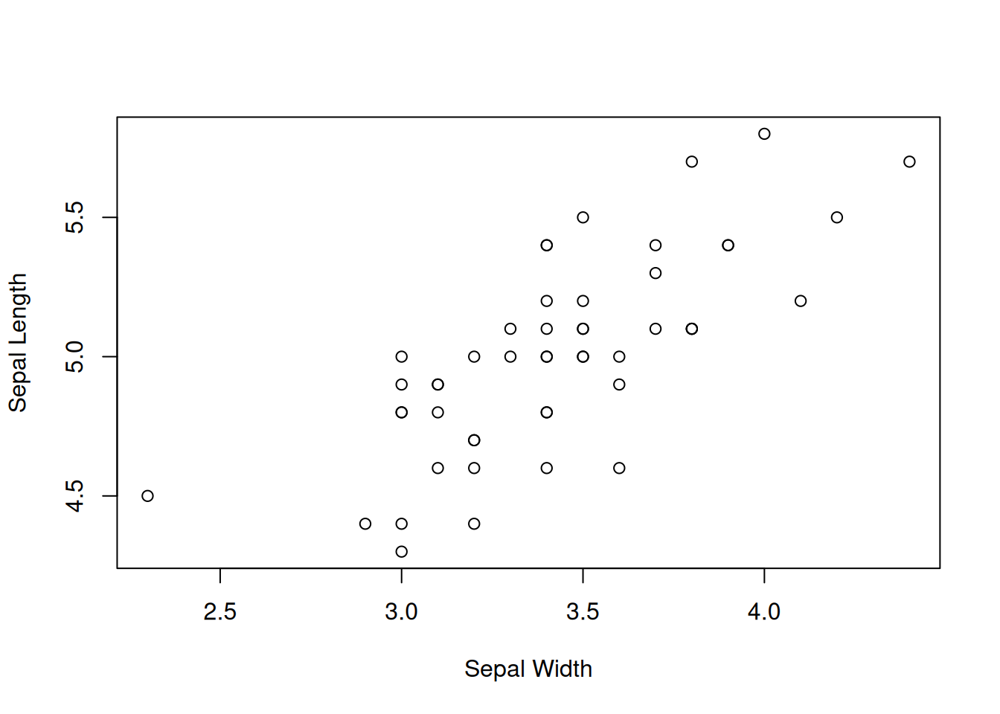
Kuva 1.9: Hajontakuvio halutuista muuttujista Sepal Width ja Sepal Length.
Kuvan 1.9 perusteella näyttää, että muuttujien välillä on lineaarinen riippuvuus. Tämän vuoksi lineaarisen regressiomallin
\[ \mathrm{Sepal\ Length}_i= \beta\cdot \mathrm{Sepal\ Width}_i + \varepsilon_i \]
sovitus voisi tuntua järkevältä tässä tilanteessa. Voimme sovittaa mallin käyttäen lm funktiota,
Eli vastemuuttuja tulee symbolin ~ vasemmalle puolelle ja selittävät muuttujat oikealle puolelle. Argumentti data ottaa sisäänsä muuttujan, joka sisältää havaintoaineiston.
Nyt sovitetun regressioviivan voi piirtää havaintoaineiston kanssa seuraavasti
plot(iris_filter$sepal_width, iris_filter$sepal_length,
xlab = "Sepal Width", ylab = "Sepal Length")
abline(a = fit_lm$coefficients[1], b = fit_lm$coefficients[2])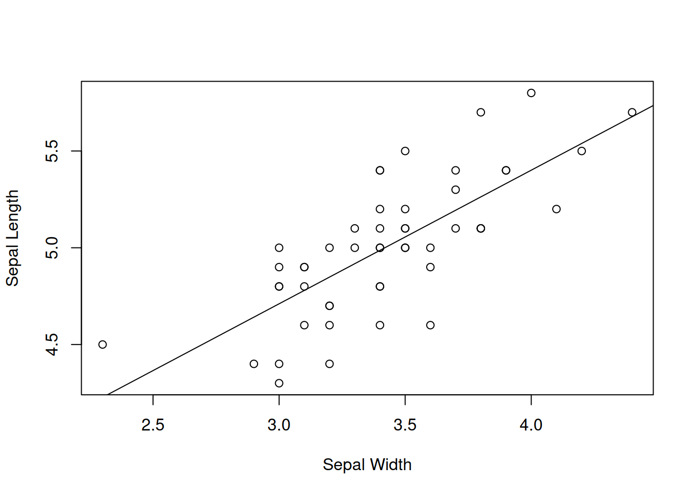
Kuva 1.10: Sovitettu lineaarinen regressiomalli.
Ensimmäinen komento piirtää saman hajontakuvion kuin kuvassa 1.9. Toinen komento piirtää sovitetun regressiokäyrän. Argumentti a ottaa sisään vakiotermin estimaatin ja parametri b ottaa sisään kulmakäyrän estimaatin. Kyseiset estimaatit voidaan myös tulostaa:
## (Intercept) sepal_width
## 2.6390012 0.6904897Tidyverse toteutus
Seuraavaksi suoritamme täysin saman data-analyysin kuin edellisessä luvussa Tidyverse pakettien avulla. Tämä on myös ensimmäinen esimerkki, jossa käytämme muita ulkoisia paketteja eikä perus-R toimintoja. Kaikki Tidyverse paketit voidaan asentaa komennolla
Kyseistä demoa varten emme kuitenkaan tarvitse kaikkia Tidyverse paketteja, joten tarvittavan osajoukon paketeista voi asentaa seuraavasti:
Kun tarvittavat paketit ollaan asennettu, voit joko kiinnittää ne library komennolla tai viitata suoraan paketin funktiohin käyttäen :: notaatiota. Pakettien kiinnittäminen on hyödyllistä, jos käytät sen sisäisiä funktiota toistuvasti samassa ohjelmassa. Tässä tapauksessa kiinnitämme paketit dplyr ja ggplot2.
Vihdoin kun paketteihin liittyvät esivalmistelut ollaan tehty ja työhakemisto ollaan asetettu, niin olemme valmiita lukemaan datan paketin readr funktion read_csv() avulla. Kyseisen funktion syntaksi on hyvin samankaltainen verrattuna perus-R asennuksen mukana tulevaan read.csv() funktioon:
Ensimmäinen argumentti antaa polun itse tiedostoon, josta data luetaan. Toinen argumentti kertoo, että tiedoston ensimmäinen rivi sisältää muuttujien nimet. Poiketen read.table() funktiosta, argumenttia havaintojen erottimelle ei tarvitse antaa, koska read_csv olettaa automaattisesti erottimen olevan pilkku. Viimeiseen argumenttiin ohjelmoija antaa sarakkeiden tietotyypit (d = double eli desimaaliluku ja c = character eli tekstipohjainen muuttuja). Tämän argumentin voit jättää halutessasi pois, jolloin read_csv() arvaa sarakkeiden tietotyypit aivan kuten read.table().
Erot funktioden read.table() ja readr::read_csv() käytössä ovat siis melko minimaaliset. Funktio readr::read_csv() on kuitenkin hieman nopeampi ja kannustaa ohjelmoijaa täsmentämään sarakkeiden tietotyypit itse. Lisäksi luettu data tallennetaan erilaisiin tietotyyppeihin:
## [1] "data.frame"## [1] "spec_tbl_df" "tbl_df" "tbl" "data.frame"Eli muuttujaan iris funktiolla read.table() luettu data on tietotyyppiä data.frame, joka on perus-R:n tietotyyppi taulukkomuotoisen datan tallentamiseen. Toisaalta iris2 on tietotyyppiä tbl_df eli tibble, joka on Tidyverse toteutus tietotyypistä data.frame. Ero näkyy esimerkiksi muuttujia iris ja iris2 tulostettaessa. Tibblen tulostus antaa vähemmän rivejä ja kertoo sarakkeiden tietotyypit otsikoiden alapuolella:
## # A tibble: 150 × 5
## Sepal.Length Sepal.Width Petal.Length Petal.Width Species
## <dbl> <dbl> <dbl> <dbl> <chr>
## 1 5.1 3.5 1.4 0.2 setosa
## 2 4.9 3 1.4 0.2 setosa
## 3 4.7 3.2 1.3 0.2 setosa
## 4 4.6 3.1 1.5 0.2 setosa
## 5 5 3.6 1.4 0.2 setosa
## 6 5.4 3.9 1.7 0.4 setosa
## 7 4.6 3.4 1.4 0.3 setosa
## 8 5 3.4 1.5 0.2 setosa
## 9 4.4 2.9 1.4 0.2 setosa
## 10 4.9 3.1 1.5 0.1 setosa
## # ℹ 140 more rowsMuuttujan iris voit halutessasi tulostaa itse mutta emme näytä tulostetta tässä luentomonisteessa, koska tuloste on niin pitkä.
Seuraavaksi siivoamme datan samaan tyyliin kuin edellisessä luvussa mutta käyttäen Tidyverse paketin dplyr funktioita. Ensin suoritamme siivoamisen, jonka jälkeen selitämme askeleet.
iris2_filter <- iris2 %>%
filter(Species == "setosa") %>%
rename(sepal_width = Sepal.Width, sepal_length = Sepal.Length) %>%
select(sepal_width, sepal_length)
iris2_filter # Print the outcome of "cleaning"## # A tibble: 50 × 2
## sepal_width sepal_length
## <dbl> <dbl>
## 1 3.5 5.1
## 2 3 4.9
## 3 3.2 4.7
## 4 3.1 4.6
## 5 3.6 5
## 6 3.9 5.4
## 7 3.4 4.6
## 8 3.4 5
## 9 2.9 4.4
## 10 3.1 4.9
## # ℹ 40 more rowsEli suoritamme yllä olevat operaatiot (filter(), rename() ja select()) järjestyksessä ylhäältä alas käyttäen putki (eng: pipe) operaattoria %>%:
Datasta
iris2suodatetaan vain ne havainnot, joiden laji onsetosa.Yllä olevan operaation lopputuloksesta kolumnit
Sepal.WidthjaSepal.Lengthnimetään uudelleen.Viimeiseksi yllä olevan operaation lopputuloksesta valitaan kolumnit
sepal_widthjasepal_lengthja tallennetaan ne muuttujaaniris2_filter.
Putki %>% tekee siis koodista luettavaa, kun monia yksinkertaisia operaatioita suoritetaan peräkkäin, mikä on tyypillistä datan siivoamisessa. Alla näkyy vielä havainnollistus putken käytöstä.
Esimerkki 1.1 (Putki operaattori) Esimerkiksi pseudokoodin7
data_transform <- data %>%
f() %>%
g() %>%
h()voisi kirjoittaa myös seuraavasti
data_transform <- h(g(f(data)))tai seuraavasti
data_transform <- f(data)
data_transform <- g(data_transform)
data_transform <- h(data_transform)Viimeinen askel on tilastollinen analyysi. Kuten perus-R toteutuksessa, voimme tarkastella dataa ensin visuaalisesti. Tidyversen toiminnallisuudet kuvaajien tekemiseen tarjotaan ggplot2 paketissa. Paketin ideana on lisäillä kerroksia kuvaajaan käyttäen + merkkiä. Kuvan 1.11 tuottavan koodin ensimmäinen kerros määrittää tarvittavat muuttujat kuvaajaa varten. Toinen kerros kertoo, että kuvaajana käytämme hajontakuviota. Viimeiset kaksi kerrosta nimeävät akselit sopivammin. Myöhempää käyttöä varten tallennamme kuvaajan muuttujaan gscatter.
gscatter <- ggplot(iris2_filter, aes(x = sepal_width, y = sepal_length)) +
geom_point() +
xlab("Sepal Width") +
ylab("Sepal Length")
gscatter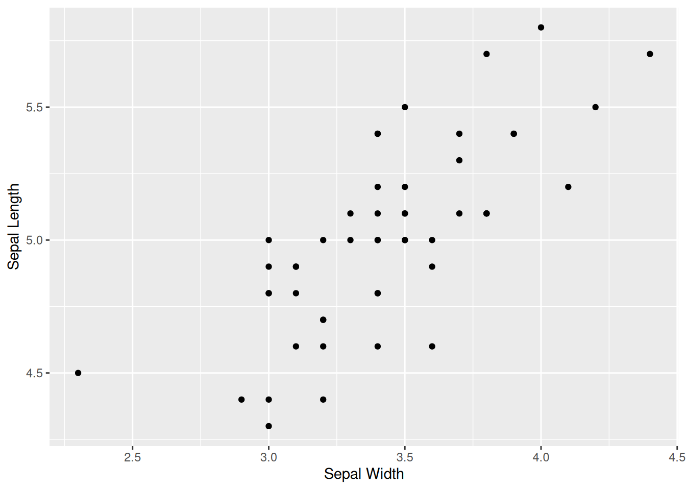
Kuva 1.11: Sama hajontakuvio kuin kuvassa 1.9 mutta käyttäen pakettia ggplot2.
Regressioviivan voimme tuottaa kuvaan 1.11 kätevästi vain lisäämällä uuden kerroksen. Estimaatit regressiokertoimille kuvaa 1.12 varten saamme edellisen luvun muuttujasta fit_lm.
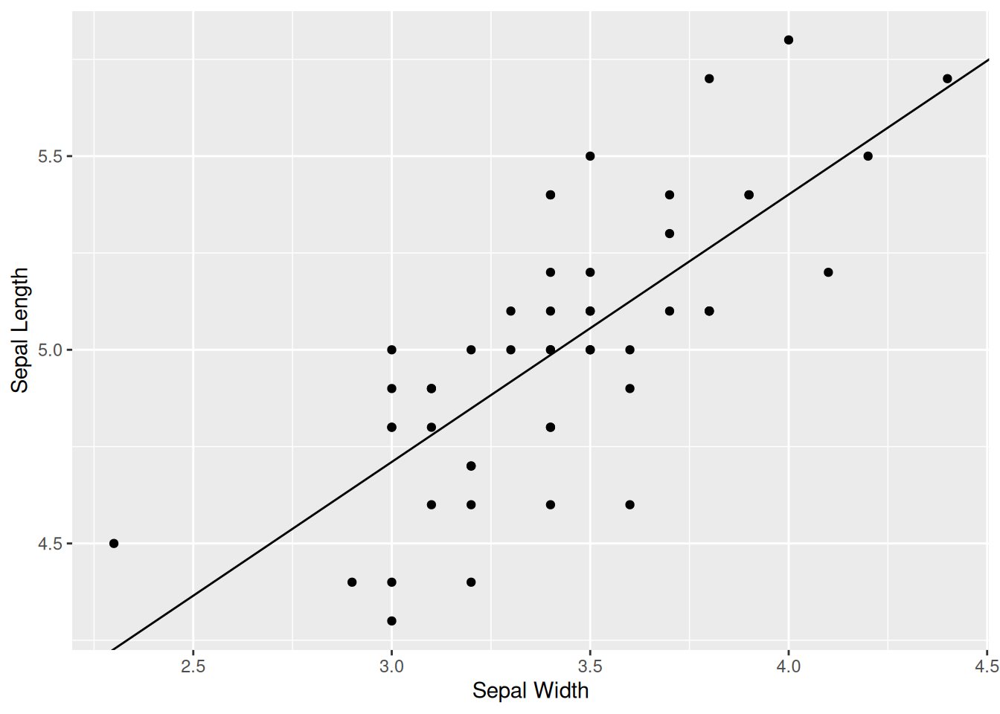
Kuva 1.12: Sovitettu lineaarinen regressiomalli kuten kuvassa 1.10 mutta käyttäen pakettia ggplot2.
1.5 R Markdown
R Markdownin avulla voi yhdistää koodia, tekstiä ja kaavoja. Eli R Markdownin avulla voit tehdä raportteja, tehdä data-analyysiin liittyviä projekteja tai jopa kirjoittaa kirjoja. Esimerkiksi tämä luentomateriaali on kirjoitettu R Markdownilla. Halutessasi voit käyttää R Markdownia tehtävien palauttamiseen mutta tämä ei ole missään nimessä pakollista kurssin puitteissa. Varsinkin jos olet aloitteleva koodari, niin suosittelen tekemään tietokonetehtävät R ohjelmien kautta. Myöhemmin kurssin edetessä, jos innostusta riittää, niin R Markdownin opetteluun voi aina palata.
Kurssisivuilla tarjoamme kuitenkin R Markdown pohjan halukkaille. Huomaa, että itse R Markdown pohjan template.Rmd tuottama tiedosto template.pdf tarjoaa ohjeita R Markdownin käyttöön.
Lähteet
Esimerkit komentorivin käytöstä ollaan toteutettu Linux Ubuntu käyttöjärjestelmällä. R ohjelmointikieltä voi käyttää komentorivin kautta myös muissa käyttöjärjestelmissä kuten Windowsissa.↩︎
Teoriassa kuka tahansa voi ehdottaa muutoksia perus-R:ään mutta käytännössä muutoksia perustoimintoihin hyväksytään erittäin harvoin. Usein vaihtoehtoiset ja uudet toiminnot toteutetaan siis R-pakettien muodossa.↩︎
Tässä vaiheessa esiteltyjen funktioden toimintaa ei tarvitse ymmärtää. Tarkoitus on esitellä, miten R-paketit toimivat↩︎
Vastaavasti suuret aineistot säilytetään usein tietokannoissa. Tällöin haluttu havaintojoukko haetaan esim. SQL-kyselyllä.↩︎
Tietojenkäsittelytieteessä argumentti tarkoittaa funktion syötettä. Vrt. \(x\) ja \(f(x)\).↩︎
R:ssä indeksöinti alkaa luvusta 1.↩︎
Pseudokoodi on eräänlaista “leikkikoodia”, jonka tarkoitus on havainnollistaa algoritmiin sisältyviä operaatioita. Itse pseudokoodi itsessään on harvoin toimivaa.↩︎